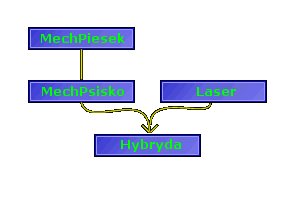

| << Poprzednia czêœæ kursu Strona g³ówna Spis Nastêpna czêœæ kursu >> |
Jeœli konstruktor ma pusty wykaz argumentów, sprawa jest prosta. Jednak w praktyce wiêkszoœæ obiektów czymœ chcemy zainicjalizowaæ i wtedy pojawiaj¹ siê konflikty pomiêdzy konstruktorami klasy rodzicielskiej i potomnej. WeŸmy sobie klasê Rodzic, zawieraj¹c¹ zmienne a i b oraz klasê Dzieciak, która dziedziczy tamte dwie zmienne oraz dodatkowo zawiera trzeci¹ zmienn¹, c. Obie klasy maj¹ odpowiednie konstruktory:
|
class Rodzic { protected: int a, b; public: Rodzic(int na, int nb) { a = na; b = nb; } }; class Dzieciak : public Rodzic { private: int c; public: Dzieciak(int na, int nb, int nc) : Rodzic(na, nb) { c = nc; } }; |
Widzimy tutaj coœ nowego - jest to budowa konstruktora klasy Dzieciak. Klasa ta dziedziczy zmienne a i b od klasy Rodzic, a wiêc w sumie konstruktor musi zainicjalizowaæ trzy zmienne: a, b i c, co widaæ w jego wykazie argumentów. Zmienn¹ c klasa Dzieciak musi inicjalizowaæ sama w normalny sposób, ale ZANIM to zrobi, wywo³uje jawnie konstruktor klasy Rodzic, aby ten zainicjalizowa³ "swoje" zmienne argumentami na i nb. W ten sposób mamy pewnoœæ, ¿e konstruktory siê nie pok³óc¹; ka¿dy dba o "swoje" zmienne.
Dodam jeszcze, ¿e po tym tajemniczym dwukropku, który umo¿liwi³ nam jawne wywo³anie konstruktora klasy Rodzic, mo¿emy sobie wstawiæ niemal dowolne wyra¿enie, a wiêc tak¿e np. wywo³anie jakiejœ funkcji sk³adowej, co daje nam du¿¹ swobodê przy budowaniu konstruktora klasy potomnej.
SprawdŸmy, czy siê udadz¹ stuczki z "leniw¹" wersj¹ konstruktora, tworz¹c obiekt typu Dzieciak (tylko bez skojarzeñ proszê ;-)):
|
Dzieciak A(10,20,30); |
No, efektu wielkiego nie widaæ, ale gdybyœmy dorzucili do obu klas jakieœ funkcje wypisuj¹ce stan zmiennych sk³adowych na ekran, moglibyœmy siê na w³asne oczêta przekonaæ, ¿e wszystko jest OK:
|
#include <iostream.h> #include <stdlib.h> class Rodzic { protected: int a, b; public: Rodzic(int na, int nb) { a = na; b = nb; } void PodajR() { cout << "a=" << a << ", b=" << b << endl; } }; class Dzieciak : public Rodzic { private: int c; public: Dzieciak(int na, int nb, int nc) : Rodzic(na, nb) { c = nc; } void PodajD() { PodajR(); cout << "c=" << c << endl; } }; int main() { Rodzic R(2,3); Dzieciak D(10,20,30); cout << "Stan Rodzica: " << endl; R.PodajR(); cout << "Stan Dzieciaka: " << endl; D.PodajD(); } |
Efekt jest zgodny z naszymi oczekiwaniami:
|
Stan Rodzica: a=2, b=3 Stan Dzieciaka: a=10, b=20 c=30 Naciœnij dowolny klawisz, aby kontynuowaæ . . . |
Poniewa¿ jesteœmy leniwi, do wypisania sk³adowych a i b obiektu klasy Dzieciak u¿yliœmy odziedziczonej funkcji PodajR, natomiast tylko do wypisania stanu zmiennej c dopisaliœmy "nowy" kod. A co, wolno nam!
W poprzednim podrozdziale celowo u¿yliœmy ró¿nych nazw dla funkcji wypisuj¹cych stan obiektu; w klasie Rodzic by³a to nazwa PodajR, a w klasie Dzieciak - PodajD. Taki zabieg pozwoli³ nam dodatkowo na u¿ycie funkcji PodajR wewn¹trz klasy Dzieciak, a wiêc nie musieliœmy siê trudziæ wypisywaniem zmiennych a i b. Co natomiast sta³oby siê, gdyby zrobiæ w tych dwóch klasach dwie zupe³nie ze sob¹ nie powi¹zane funkcje Podaj? SprawdŸmy:
|
#include <iostream.h> #include <stdlib.h> class Rodzic { protected: int a, b; public: Rodzic(int na, int nb) { a = na; b = nb; } void Podaj() { cout << "a=" << a << ", b=" << b << endl; } }; class Dzieciak : public Rodzic { private: int c; public: Dzieciak(int na, int nb, int nc) : Rodzic(na, nb) { c = nc; } void Podaj() { cout << "a=" << a << ", b=" << b << ", c=" << c << endl; } }; int main() { Rodzic R(2,3); Dzieciak D(10,20,30); cout << "Stan Rodzica: " << endl; R.Podaj(); cout << "Stan Dzieciaka: " << endl; D.Podaj(); cout << "Zmienne a i b Dzieciaka: " << endl; D.Rodzic::Podaj(); system("pause"); } |
Niespodzianka - nic siê nie stanie! Program skompilowa³ siê prawid³owo. Funkcja Podaj z klasy Rodzic zosta³a przes³oniêta przez funkcjê o takiej samej nazwie z klasy Dzieciak, a wiêc instrukcja R.Podaj() wywo³uje Podaj z klasy Rodzic, a D.Podaj() wywo³uje Podaj z klasy Dzieciak. ¯eby by³o œmieszniej, nadal mamy dostêp do "starej wersji" funkcji Podaj w klasie Dzieciak! Robimy to tak: D.Rodzic::Podaj(), jak powy¿ej zreszt¹. Oto wydruk z programu:
|
Stan Rodzica: a=2, b=3 Stan Dzieciaka: a=10, b=20, c=30 Zmienne a i b Dzieciaka: a=10, b=20 Naciœnij dowolny klawisz, aby kontynuowaæ . . . |
Równie ciekawie jest z konwersjami w hierarchii klas. Rozbudujmy trochê naszego Rodzica, dorzucaj¹c mu operator przypisania:
|
class Rodzic { protected: int a, b; public: Rodzic(int na, int nb) { a = na; b = nb; } void Podaj() { cout << "a=" << a << ", b=" << b << endl; } Rodzic& operator=(const Rodzic& obj) { a = obj.a; b = obj.b; return *this; } }; |
W klasie Dzieciak zostawiamy wszystko po staremu i testujemy nasz nowy operatorek:
|
int main() { Rodzic R(1,2); Dzieciak D(3,4,5); cout << "Stan Rodzica przed przypisaniem: "; R.Podaj(); cout << "Stan Rodzica po przypisaniu: "; R = D; R.Podaj(); system("pause"); } |
Dostajemy takie napisy:
|
Stan Rodzica przed przypisaniem: a=1, b=2 Stan Rodzica po przypisaniu: a=3, b=4 |
Zastanawiasz siê, co w³aœciwie siê sta³o? Proste jak drut: mo¿liwa jest niejawna konwersja obiektu klasy potomnej na obiekt klasy rodzicielskiej! Wykonuj¹c instrukcjê R = D komputer po prostu przepisa³ wartoœci zmiennych a i b z obiektu D do obiektu R, natomiast zmienn¹ c po prostu sobie zignorowa³, poniewa¿ klasa Rodzic jej nie zna.
W drug¹ stronê oczywiœcie to nie dzia³a, tzn. nie mo¿emy napisaæ D = R. Mo¿emy za to dodaæ odpowiedni operator konwersji do klasy Dzieciak i wtedy bêdzie siê da³o zrobiæ równie¿ i takie przypisanie.
Co ciekawe, wskaŸniki i referencje do klasy rodzicielskiej mog¹ byæ u¿ywane tak¿e z obiektami klasy potomnej (co, rzecz jasna, jest zupe³nie niezale¿ne od zdefiniowania operatora '='):
|
Dzieciak D; Rodzic* wskRodzic; wskRodzic = &D; Rodzic& refRodzic = D; |
Obiekt w C++ mo¿e mieæ wielu rodziców. Sam te¿ mo¿e byæ rodzicem dla wielu innych obiektów. Realizuje siê to w tzw. dziedziczeniu mnogim. W ten sposób mo¿emy tworzyæ naprawdê skomplikowane hierarchie klas. Mo¿emy te¿ u¿yæ dziedziczenia mnogiego do ca³kiem niewinnego celu, np. stworzenia hybrydy psa i dzia³a laserowego ;-).
|
class MechPiesek { protected: char* imie; int kolor; int wielkosc; public: void wypisz_imie(); void szczekaj(); void aportuj(); }; class Laser { public: void strzel(); }; class MechPsisko : public MechPiesek { public: void atakuj_akwizytora(); }; class Hybryda : public MechPsisko, public Laser { }; |
Jak widzimy, klasa Hybryda jest zupe³nie pusta, a jednak ma sporo mo¿liwoœci - wszystkie odziedziczone - a wiêc: mo¿e strzelaæ z lasera, mo¿e atakowaæ akwizytora, mo¿e szczekaæ, aportowaæ i wypisywaæ swoje imiê, a w dodatku posiada kolor i wielkoœæ. Widzimy równie¿, ¿e specyfikatory i nazwy klas rodzicielskich przy dziedziczeniu rozdzieliliœmy przecinkiem.
Nasz schemat dziedziczenia tworzy ju¿ ca³e drzewo, mo¿na go przedstawiæ nastêpuj¹co:

Nad dziedziczeniem mnogim nie ma siê co rozwodziæ, bo wszystko jest tu prawie takie samo, jak w dziedziczeniu pojedynczym. Warto jednak wspomnieæ o przys³anianiu dziedziczonych sk³adowych. Kiedy np. dziedziczymy od dwóch klas równoczeœnie i w obu tych klasach wystêpuj¹ sk³adowe o identycznych nazwach, to przes³oniêcie nie nast¹pi, poniewa¿ kompilator nie bêdzie móg³ rozstrzygn¹æ, która z tych dwóch klas jest "wa¿niejsza". Z tego powodu ¿adna z dwóch sk³adowych nie bêdzie bezpoœrednio dostêpna:
|
#include <iostream.h> #include <stdlib.h> class Rodzic1 { public: int x; Rodzic1(int z) { x=z; } }; class Rodzic2 { public: int x; Rodzic2(int z) { x=z; } }; class Dzieciak : public Rodzic1, public Rodzic2 { public: int a; Dzieciak(int z1, int z2, int z3) : Rodzic1(z1), Rodzic2(z2) { a=z3; } }; int main() { Dzieciak D(5,10,15); cout << D.Rodzic1::x << endl; cout << D.Rodzic2::x << endl; cout << D.a << endl; // cout << D.x << endl; //tak nie mo¿na! system("pause"); } |
W sumie klasa Dzieciak ma tu trzy sk³adowe zmienne: w³asn¹ a oraz dwie odziedziczone x. Konstruktor dla takich dwóch niejawnych zmiennych o identycznych nazwach jest dok³adnie taki sam, jak we wczeœniejszych przyk³adach, ale odwo³ania do tych zmiennych - nie bardzo. Nie mo¿emy odwo³ywaæ siê do nich bezpoœrednio, tak jak w wykomentowanej linijce, poniewa¿ kompilator stwierdzi, ¿e jest to niejednoznacznoœæ (mo¿esz sprawdziæ, usuwaj¹c komentarz). Musimy u¿yæ operatora dostêpu :: (podwójny dwukropek), ¿eby pokazaæ kompilatorowi, do której zmiennej x chcemy siê odwo³aæ. Powy¿szy przyk³ad pokazuje zreszt¹, ¿e x w klasie Dzieciak to dwie zupe³nie niezale¿ne zmienne: jedna bêdzie zawieraæ wartoœæ 5, a druga 10.
Nie rozpêdzaj siê zbytnio z tym dziedziczeniem. To dobra rzecz, ale stosuj je tylko wtedy, gdy jest to naprawdê potrzebne. Bardzo rozleg³e hierarchie klas s¹ bardzo trudne do zaprojektowania, zupe³nie niepostrze¿enie mo¿na w nich zrobiæ trudny do wykrycia b³¹d, który sprawi, ¿e ca³a hierarchia nie bêdzie dzia³aæ.
Z dziedziczeniem jest w C++ tak samo, jak w naturze. Gdyby jakiœ gatunek zwierz¹tek, np. cz³owiek, okaza³ siê na tyle g³upi, by wynaleŸæ cywilizacjê, przestaæ uznawaæ prawo d¿ungli i przestaæ zabijaæ s³absze zwierz¹tka aby mog³y przetrwaæ silniejsze, to te s³absze rozmna¿aj¹c siê przekazywa³yby swoje s³abe geny dalej, a¿ w koñcu skazi³yby nimi ca³y gatunek, który by zgin¹³, do czego nawiasem mówi¹c nieuchronnie zmierzamy. Sytuacjê analogiczn¹ mamy w klasach: klasa s³aba, z najmniejszym nawet b³êdem mo¿e popsuæ wszystkie swoje klasy potomne. W dodatku takie b³êdy potêguj¹ siê z ka¿dym dziedziczeniem, a¿ w koñcu "najm³odsza" klasa jest jednym wielkim b³êdem.
Im drzewo klas rozleglejsze, tym trudniej programiœcie ogarn¹æ je umys³em, a wiêc tym trudniej kontrolowaæ. Pamiêtaj!
| << Poprzednia czêœæ kursu Strona g³ówna Spis Nastêpna czêœæ kursu >> |